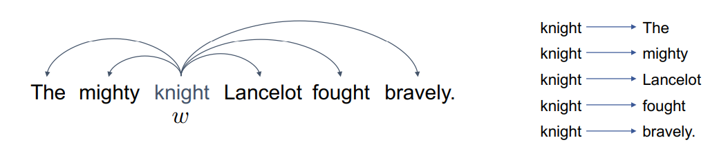

Word Embeddings and Language Modelling
Mikolov, Bojanowski, Xu,
DeepLearn 2019
The ONS makes  statistics
statistics
DeepLearn2019
- Deep learning week long summer school in Warsaw
- Covered many area of deep learning
- Organised by IRDTA: Institute for Research Development, Training and Advice
- 2 sessions about word embeddings:
- Using Neural Networks for Modeling and Representing Natural Languages: Tomas Mikolov and Piotr Bojanowski
- Multi-resolution Models for Learning Multilevel Abstract Representations of Text: Xiaowei Xu
Introduction
- Text processing is very important and the core business of internet companies
- Machine learning and natural language processing techniques are applied to big datasets to improve many tasks
- Much of the data in potential new ONS data sources is in the form of text
Word Embeddings and Language Modelling
Mikolov, Bojanowski, Xu,
DeepLearn 2019
The ONS makes statistics
word2vec
- A shallow (one hidden layer) neural network.
- Training the network to predict the next word
- Word vectors (or embeddings) are matrix between the input and hidden layer
Two modes of prediction words
- Skip-gram: model probability of the context given a word
- skip-gram is slower but better for more infrequent words
- 
- Cbow: model probability of word given context
- Cbow is faster for large corpora
Training Considerations
- Neural network is trained using standard stochastic gradient descent and back propagation
- Learning rate is a very important parameter to tune, usually start high and get smaller.
- Number of training epochs - smaller training set more epochs
- Consider regularisation - is possible for network to 'memorize' training data
- All parameters need tuning when producing a model
- Pre-trained word vectors provide generalization for systems trained with limited amount of supervised data
How should you evaluate the word vectors?
Word regularities might give better assesment of the word vectors
- Analogies:
- good : better ⇒ rough : ___
- see : saw ⇒ return : ___
- Questions datasets:
- Athens:Greece ⇒ Oslo: ___
- possibly:impossibly ⇒ ethical: ___
- Assessment data sets avalible from word2vec/fastText websites
Also can do word 'algebra'
fastText
- Enriching Word Vectors with Subword Information Bojanowski, Grave, Joulin, Mikolov. TACL 2017
- An extension to word2vec - includes character level information
- Developed at Facebook
Subword information
- Important for suffixes and grammatical varations
- Allows the building of out of vocabulary words out of n-grams
- Even more important in non english e.g. Polish declension
- Add special positional characters for prefix suffix
Training Techniques
- Advances in Pre-Training Distributed Word Representations: Mikolov2018
- Using some known tricks can improve word vectors
- Word embedding models require training on large data
- Using Continuous bag-of-words with negative sampling
- Remove duplicate sentences
- Merge words with high mutual information (phrases)
- New York City → New_York_City
- Position-dependent weighting:
- Train poistion representation and use these to reweight the word vectors and produce context vectors
Pretrained fastText Overview
- Facebook - Mikolov et.al. (2018)
- Contextual mostly free
- Dataset: Common Crawl
- Embeddings: 1x300 dimensional word vectors
fastText for language modelling and classification
- Language Modelling: A statistical model of the probability model of language
- All of the embedding models are a form of language model
- fastText has classification option to train text classifiers from supervised data
- Uses the neural network with a softmax or hierarchical softmax classifier on the output
ELMo (Embeddings from Language Models)
- ELMo uses both word and context information
- A word embedding depends on its context, words in different context have diffent embeddings

ELMo (Embeddings from Language Models)
- Elmo uses Bi-directional LSTM models
- This means it trains a forward and backward language model
- Embedding come from combing all weights across the hidden layers and both models
Pretrained ELMo Overview
- Washington Uni/Microsoft/Allen Inst - Peters et.al. (2018)
- Contextual, Bidirectional
- Dataset: 1Billion word Benchmark
- Embeddings: 3x1024 dimensional word matrices
- Developed bu the Allen Institute
- Avalible via PyTorch implementation as part of allennlp python module
BERT (Bidirectional Encoder Representations from Transformers)
- Generated huge interest and described as major breakthrough for NLP
- Is a deep learning technique using bidirectional transformers
- Not going to explain details about how BERT works
- Blog describing BERT: http://jalammar.github.io/illustrated-bert/
How is BERT trained?
- BERT pre-trained on 2 tasks: Masked language model and Next sentence prediction
- Masked language model: hides 15% input words/tokens to reduce infomation leakage from bidirectional transformers
- Next sentence prediction: Classificaiton task to predict if the second sentence is the next sentence
Using BERT for Embeddings
- Bert prduces possible word vectors at levels
Using BERT for Embeddings
- No hard rule for how to produce your word embeddings
- Stil not obvious how to embed sentences
- Suggest averaging tokens for the second to last hidden layer
- BERT (and other contextual vectors) can't do word level similarity
- https://mccormickml.com/2019/05/14/BERT-word-embeddings-tutorial/
Using BERT Fine tuning
- Used to give state of art results
- Use your own training data to reweight the model
- Done with pharmaceutical work and improved results
- Either use the usual BERT methods or add own final classification layer
Pretrained BERT Base Overview
- Google - Devlin et.al. (2018)
- Contextual, Bidirectional
- Dataset: Wikipedia + BookCorpus
- Embeddings: 24x768 dimensional word matrices
Word Embeddings and Language Modelling
Mikolov, Bojanowski, Xu,
DeepLearn 2019
The ONS makes statistics
Multi-Resolution Models for Learning Multilevel Abstract Representation of Text
Xiaowei Xu
- Using word vector each model has strengths and weeknesses
- Investigated using a mixture of all word embeddings
Multi-Resolution Models for Learning Multilevel Abstract Representation of Text
- Trained a Neural Network to work out weighting mixtures for downstream task
- Produced improvement on an significantly improve the performance of ad-hoc retrieval task
How could we use word embeddings and language model
- Is it ok to just use one type of vector/model?
- Can we ever train our own fastText/word2vec models? and should we?
- How do we create sentence vectors?
- Average, sum, concatenate
- Suggestion from Bojanowski: TF-IDF weighting of words
- Suggestion from Miklov: do not build embeddings for longer than short phrases (5-6 words) they don't really work
How could we use word embeddings and language model
- Could we fine tune a BERT language model for a specific task?
- Would it improve the embeddings?
- Is it worth the effort vs choosing an embedding layer?